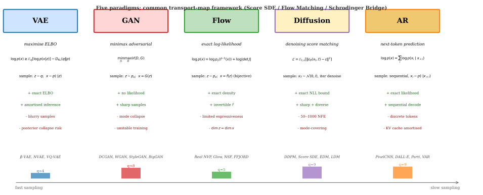

Generative modeling aims to learn the underlying data distribution and generate new samples from it. Classical approaches include Gaussian mixture models (Reynolds 2009), kernel density estimation, and graphical models (Bayesian networks, Markov random fields). These methods scale poorly to high-dimensional data: Gaussian mixtures require exponentially many components, kernel methods suffer from the curse of dimensionality, and graphical-model inference is intractable for dense dependencies. Deep learning changed the field by moving the modelling effort from the density to the map. Classical methods place a tractable density directly on and then pay for that tractability in expressiveness. Neural methods instead parameterize a map from a simple distribution to the data and let the density be whatever that map induces, which removes the component-count and bandwidth bottlenecks above at the price of an objective that is no longer a plain likelihood. Every paradigm below is a different answer to the question that price raises: what do you optimize when you can no longer optimize the likelihood directly?
Variational Autoencoders (Kingma and Welling 2014) introduced amortized variational inference with neural networks, enabling efficient approximate posterior inference through the Evidence Lower Bound (ELBO). Extensions include importance-weighted bounds (Burda et al. 2016), disentangled representations (Higgins et al. 2017), and hierarchical architectures (Vahdat and Kautz 2020). The VAE framework connects to classical variational Bayes (Jordan et al. 1999) and neural autoencoders (Hinton and Salakhutdinov 2006), combining the probabilistic principles of the former with the representation-learning flexibility of the latter.
Generative Adversarial Networks (Goodfellow et al. 2014) frame generation as a game between generator and discriminator networks through the adversarial game. Key advances include stable training techniques (Gulrajani et al. 2017), progressive growing (Karras et al. 2018), and style-based generation (Karras et al. 2019). The game-theoretic framing spread under the label ``adversarial'', but two different things travelled under that one word, and they are separate. What transferred literally is the discriminator as a learned loss: domain-adversarial training (Ganin et al. 2016) trains a domain classifier on the features and reverses its gradient into the feature extractor, so the classifier plays exactly the discriminator's role of supplying a loss that adapts to whatever the encoder is currently getting wrong. What transferred only in form is the saddle point: adversarial robustness (Madry et al. 2018) writes training as , which is a minimax problem, but its inner maximiser is a projected-gradient attack on the input rather than a second network with parameters of its own. So domain adaptation inherited the GAN mechanism and robust training inherited the GAN shape, and conflating the two is what makes the ``adversarial'' literature look more unified than it is.
Normalizing Flows (Rezende and Mohamed 2015) provide exact likelihood computation through invertible transformations. Notable architectures include Real NVP (Dinh et al. 2017), MAF (Papamakarios et al. 2018), Glow (Kingma and Dhariwal 2018), and Neural Spline Flows (Durkan et al. 2019). Flows generalize classical change-of-variables density estimation by using deep neural networks as the transformation, with careful design constraints to maintain invertibility and efficient Jacobian computation.
Score-based models (Song and Ermon 2020) learn the gradient of the log-density and generate via Langevin dynamics. The connection to diffusion models (Ho et al. 2020) established a unified framework through stochastic differential equations (Song et al. 2021). Score-based generation builds on score matching (Hyvärinen 2005) and denoising autoencoders (Vincent et al. 2008), with the continuous-time formulation drawing on results from stochastic calculus (Anderson's reverse-time diffusion theorem from 1982).
Autoregressive models (PixelRNN (Oord, Kalchbrenner, and Kavukcuoglu 2016), PixelCNN (Oord, Kalchbrenner, Vinyals, et al. 2016), WaveNet (Oord, Dieleman, et al. 2016), GPT (Radford et al. 2019)) provide a competing paradigm that factorizes the joint via the chain rule and models each conditional with a deep neural network. For discrete data and sequences, autoregressive models are often the natural choice; for continuous high-dimensional data, they have been largely superseded by diffusion models due to sampling speed.
Recent work has focused on unifying these paradigms through the score SDE framework (Song et al. 2021), Flow Matching (Lipman et al. 2023), and the Schrödinger bridge perspective (De Bortoli et al. 2021). The field increasingly views VAE/GAN/flow/diffusion as different instantiations of a common transport-map framework, with architectural and training-objective choices distinguishing them rather than fundamental paradigm differences.

The five paradigms are the VAE, the GAN, the flow, the score-based model and the diffusion model, and each is detailed in the sections that follow, with its core formulation, its key extensions, its practical training considerations, its architectural innovations, and its empirical results. Two readings run in parallel throughout. The historical reading asks what problem each paradigm was built to solve. The modern reading asks where each sits in the transport-map framework, and that reading has a single organising claim: every one of these models learns a map from a simple distribution to the data, and what separates them is the divergence the objective minimises plus the constraint the parametric family carries. The divergence is the load-bearing choice. Forward KL is mode-covering, so VAEs, flows, autoregressive models and diffusion cover modes and blur; reverse KL is mode-seeking, so the non-saturating GAN sharpens and drops modes; JS saturates when supports are disjoint, which is why the original GAN objective stalls; the Wasserstein distance stays finite across disjoint supports, which is why WGAN trains where JS does not. Each paradigm's characteristic failure mode is a consequence of its divergence rather than an accident of its architecture, and the information-theoretic section closes the argument. Read every section below as an answer to two questions: which divergence, and which constraint.